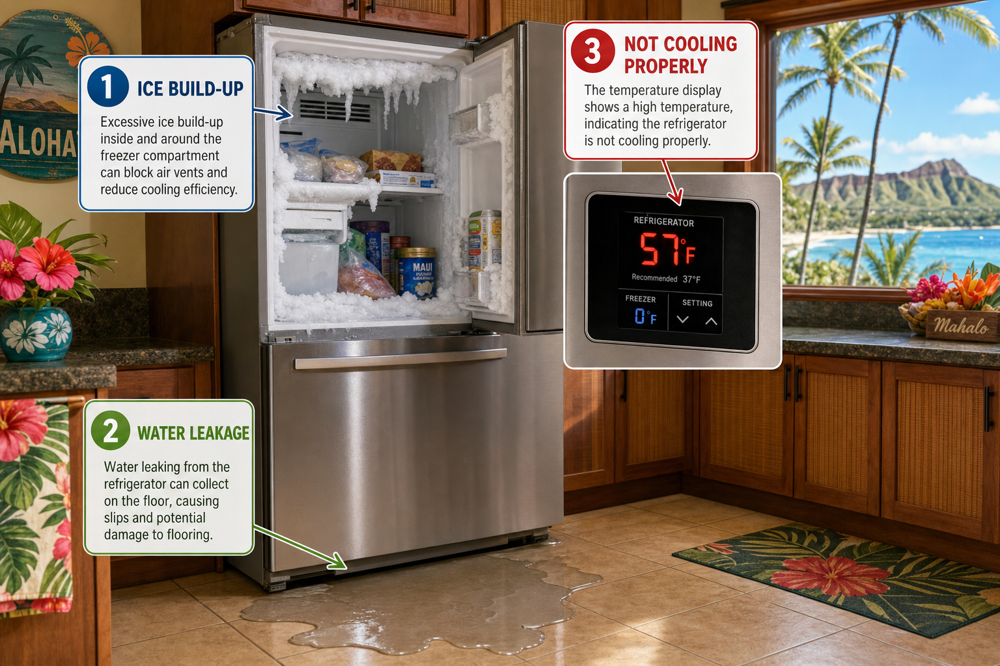

Common Refrigerator Problems in Hawaii

In Hawaii's tropical climate, the refrigerator is one of the hardest-working appliances in your home. It runs 24 hours a day, fights against ambient temperatures that rarely drop below 70°F, and deals with the high humidity that characterizes island living. It's no surprise that refrigerator failures are one of the most common service calls we receive at Cool Breeze Appliance Repair.
Not Cooling Properly
The most common complaint is that the refrigerator isn't maintaining temperature. In Hawaii, this is often caused by dirty condenser coils — because the refrigerator runs more frequently in the warm climate, coils accumulate dust and debris faster. When coils are dirty, the compressor can't efficiently reject heat, and temperatures rise. The fix is coil cleaning, often followed by checking refrigerant levels. If the compressor is the issue, it may need replacement — a significant but often worthwhile repair compared to buying a new refrigerator.
Ice Maker Issues
Ice maker problems are extremely common in Hawaii, where the combination of hard water and high mineral content causes scale buildup in water lines, filters, and ice maker mechanisms. Scale can block the fill valve, clog tubing, and cause the ice maker to produce small, cloudy, or misshapen ice. Regular filter replacement (every 6 months rather than the manufacturer's recommended 12 months in Hawaii) and periodic system flushing help prevent these issues.
Excessive Frost in Freezer
In Hawaii's humidity, frost buildup accelerates. Every time you open the refrigerator door, humid air enters and eventually deposits frost on the evaporator coils. When frost buildup exceeds what the defrost system can handle, the freezer becomes excessively frosty and the refrigerator section warms up as airflow becomes blocked. Defrost heater, defrost thermostat, or defrost timer failures allow this buildup to occur. This is a commonly missed diagnosis — many technicians replace expensive components when a simple defrost system repair would solve the problem.
Water Leaking Inside or Under the Refrigerator
Water pooling inside or under the refrigerator typically points to a blocked defrost drain. In Hawaii's humidity, mold and debris can block the small drain tube that carries defrost water from the evaporator area to the drain pan. The blocked drain allows water to accumulate, eventually overflowing into the refrigerator interior or onto your floor. Clearing and cleaning the drain tube is usually a simple repair.
Loud or Unusual Noises
Banging, clicking, or grinding noises from a refrigerator indicate mechanical issues. A knocking sound from the back usually points to the condenser fan motor or compressor starting relay. Vibrating or rattling can often be resolved by ensuring the refrigerator is level and drain pan is properly seated. A clicking sound that repeats every few minutes without the compressor running indicates a failing compressor start relay — a relatively inexpensive part that's worth replacing before it causes compressor damage.
Cool Breeze diagnoses and repairs all refrigerator issues on Hawaii Island. Same-day service available for urgent calls.
Book Refrigerator Repair